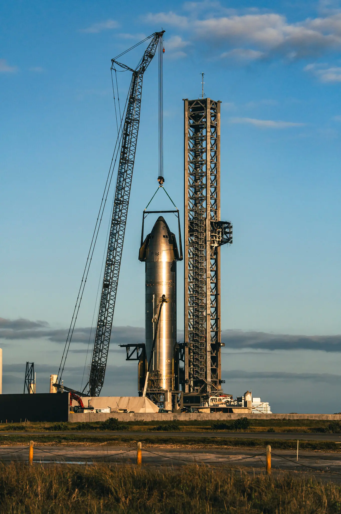

SpaceX’s Starship rocket at its launch site in Boca Chica, Texas. Mr. Musk started donating to the community surrounding his facility after another rocket exploded in 2021.Credit...
 Mr. Musk is under no obligation to have a charity, and he has made clear that he believes his for-profit enterprises will change the world for the better far more than any philanthropic venture could. But once he set up a nonprofit and filled it with tax-deductible gifts, he was required by law to ensure that his foundation served the public, and that it did not operate for the “private benefit” of its leader. A New York Times analysis found that, of the Musk Foundation’s giving in 2021 and 2022 — the latest years for which full data is available — about half of the donations had some link to Mr. Musk, one of his employees or one of his businesses. Among the donations the Musk Foundation has made, there was $55 million to help a major SpaceX customer meet a charitable pledge. There were the millions that went to Cameron County, Texas, after the rocket blew up. And there were donations to two schools closely tied to his businesses: one walled off inside a SpaceX compound, the other located next to a new subdivision for Musk’s employees. “The really striking thing about Musk is the disjuncture between his outsized public persona, and his very, very minimal philanthropic presence,” said Benjamin Soskis, who studies philanthropy at the Urban Institute. Where other billionaires have aimed for a broad impact on society, Mr. Soskis said Mr. Musk’s foundation lacks “any direction or any real focus, outside his business ventures.” Mr. Musk did not respond to requests for comment.
Elon Musk Has a Giant Charity. Its Money Stays Close to Home.
After making billions in tax-deductible donations to his philanthropy, the owner of Tesla and SpaceX gave away far less than required in some years — and what he did give often supported his own interests. Before March 2021, Elon Musk’s charitable foundation had never announced any donations to Cameron County, an impoverished region at the southern tip of Texas that is home to his SpaceX launch site and local officials who help regulate it.Then, at 8:05 one morning that month, a SpaceX rocket blew up, showering the area with a rain of twisted metal.The Musk Foundation began giving at 9:27 a.m. local time.“Am donating $20M to Cameron County schools & $10M to City of Brownsville for downtown revitalization,” Mr. Musk said on Twitter.